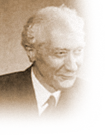
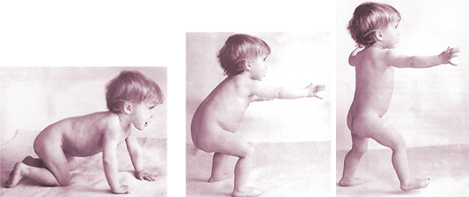

FM Alexander discovered principles about the body, which we share with all vertebrate animals. Working consciously with these principles enabled him to regain a quality of balance and poise in his body and to make deep and lasting changes in the way he used his voice, which as an actor was vitally important to him.
“… every single thing we are doing in the work is exactly what is being done in Nature… the difference being that we are learning to do it consciously”
~ FM Alexander
The Alexander Technique… is a valuable system for bringing lasting change to the way we move and use our bodies and minds. Simple activities like sitting, standing, bending and walking can be done with greater ease and poise. Many people have received lasting relief from back, neck or shoulder pain, joint and muscle problems, mental and emotional stress and other health problems as a result of taking a course of lessons. Its effectiveness is well documented (alexandertechnique.com) and has been the subject of a recent scientific study which the British Medical Journal has documented on video.
Musicians, actors, dancers, singers and athletes have learnt the technique in order to improve the way they perform. Students of yoga, tai chi, meditation and other disciplines have applied it to their spiritual practice as it teaches the skills of being self-aware and present in the moment.
Alexander teachers work with their hands, sometimes guiding you during movement such as walking, sitting and standing, playing an instrument, or other activities and sometimes during stillness while you are lying down on a therapy table. Touch is central to the work, and a large part of an Alexander teacher's training is learning how to use their hands in a way that will bring about the changes that they want to create in the musculature and the nervous system.
